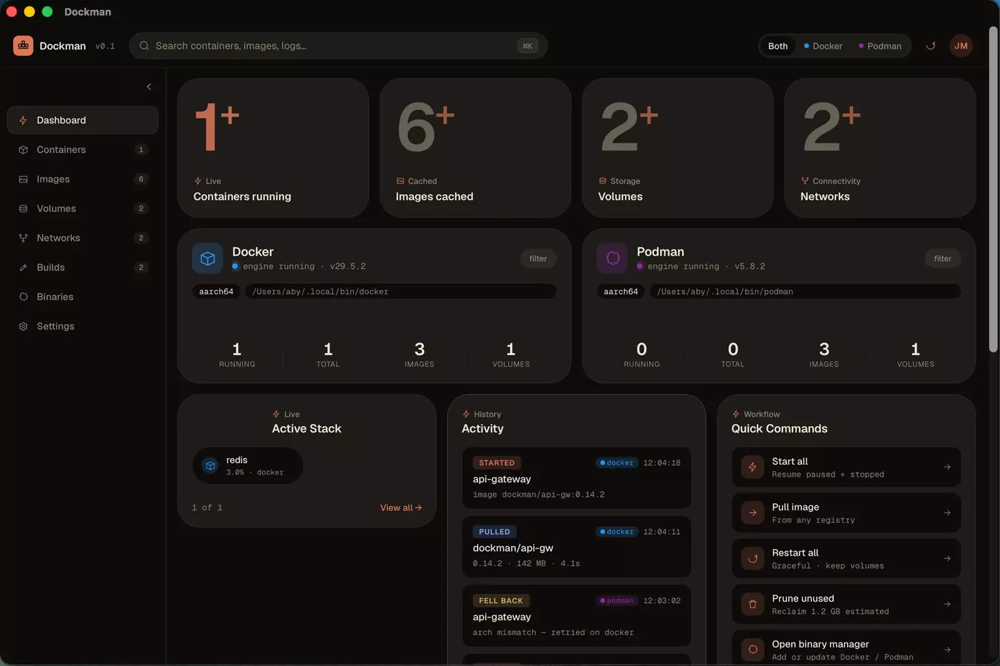
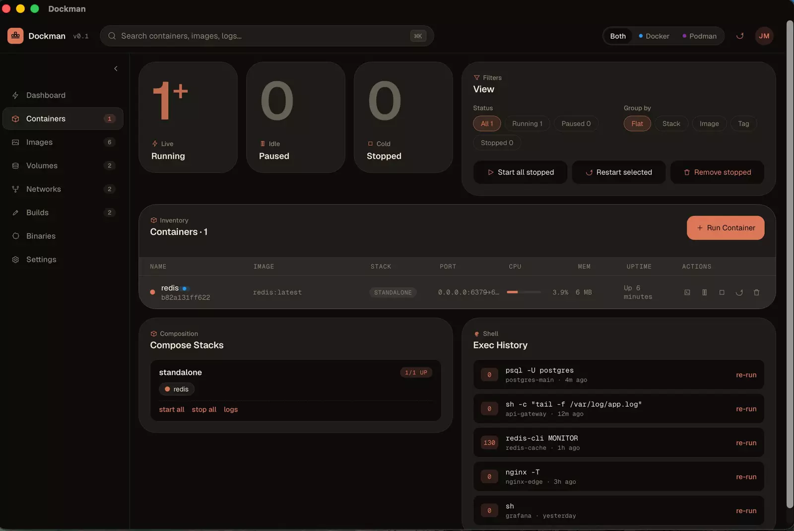
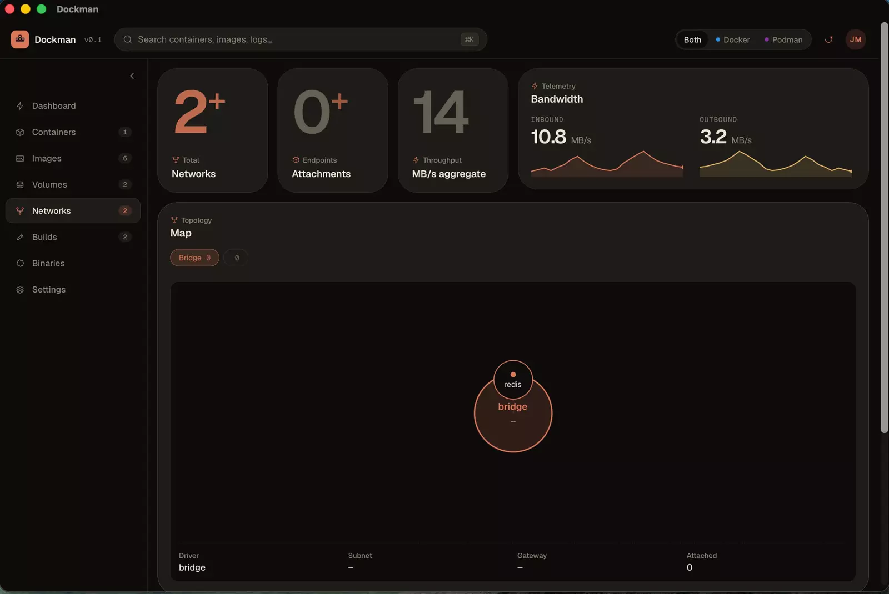
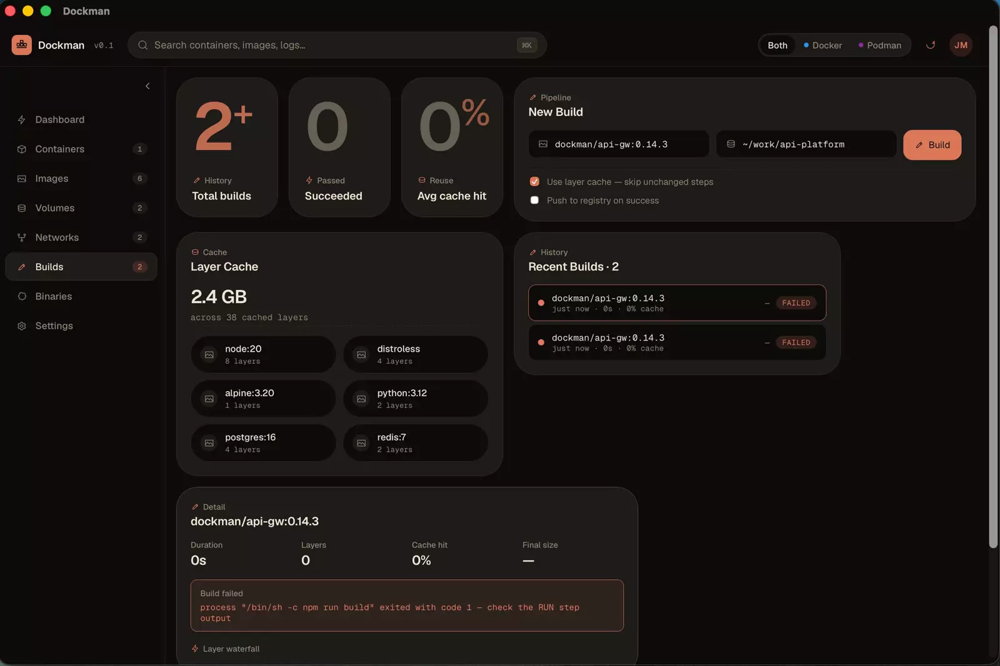

Dashboard
A live overview: running containers, cached images, volumes and networks. Twin Docker and Podman engine cards, an activity feed, and one-click quick commands.
dockerpodman⌘K search
Dockman is a native desktop app for your container runtimes. Containers, images, volumes, networks, builds and the runtimes themselves, in one window.
macOS · Windows · Linux · MIT licensed
Both engines in one list. Run a container on either, or filter down to one.

Nine areas, all in the sidebar. Each one works with both runtimes.
A live overview: running containers, cached images, volumes and networks. Twin Docker and Podman engine cards, an activity feed, and one-click quick commands.
A filterable, groupable table with start, stop, pause, restart and remove. The Run Container composer takes image presets, a name, a runtime, port, env and volume mappings, and a command override.

Open an interactive terminal into any running container. Switch between sh and bash, and walk command history with the arrow keys.
Browse the local library, pull from any registry, see a storage breakdown, prune what is unused and review top registries.
Usage and reclaimable space, active bind mounts, and scheduled backup snapshots.
A topology map of what is attached to what, plus live inbound and outbound bandwidth.

Start image builds with layer caching, follow the build history and inspect the layer waterfall.

Install, update and switch between Docker and Podman CLI versions, with a setup checklist.
Pick the active runtime, tune engine resources, and toggle Compose v2, BuildKit and Rosetta.
Built on Tauri, so there is no bundled browser. MIT licensed, no account, and telemetry is off by default. If a Podman run hits an architecture mismatch, Dockman can retry it on Docker.
Pick a tab. Arrow keys move between them, and Enlarge opens the full size image.
Dockman does not ship its own container engine. It drives the Docker and Podman command line tools and shows you the result.
The UI, built with Vite, with state kept in Zustand. One page per area: dashboard, containers, images, volumes, networks, builds, binaries, settings.
Commands in Rust handle containers, images, volumes, networks, builds, compose, exec and runtime detection. The app is a small native binary.
Rust spawns the docker and podman CLIs and reads their output. Use the ones on your machine, or install them from the Binaries page.
Here is what each platform will get.
There are no prebuilt installers yet. The first ones are being prepared and will appear on the Releases page. Until then, build from source.
macOS will say it can't verify Dockman (free side project, not notarized).
This applies to the installers once they are published, and to a build you copy to another machine. An app you build locally opens normally.
Open System Settings → Privacy & Security and click Open Anyway, or run this in Terminal:
xattr -dr com.apple.quarantine /Applications/Dockman.appSmartScreen shows a prompt. Choose More info → Run anyway.
Make the AppImage executable and run it:
chmod +x Dockman_*.AppImage && ./Dockman_*.AppImageOr install the .deb:
sudo apt install ./Dockman_*.debThe quickest way to try Dockman today.
$ git clone https://github.com/AbyAbyss/dockman.git
$ cd dockman$ npm install$ npm run tauri devThe installer for your platform lands in src-tauri/target/release/bundle/.
$ npm run tauri build